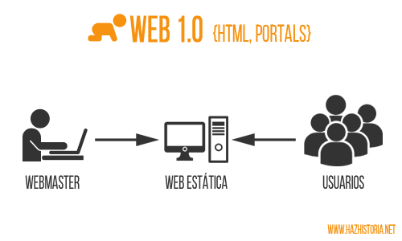

| Evolución de la web |
| Versión |
Año de inicio |
Descripción |
Caraterísticas |
Imagen |
| Web 1.0
|
1990
|
La web 1.0 es la forma más básica que existe de navegadores de solo texto.
Apareció hacia 1990 y es muy primitiva para lo que hoy ofrece la web. La web 1.0
la utilizan personas conectadas a la web utilizando Internet y es de solo lectura y
el usuario es, básicamente, un sujeto pasivo que recibe la información o la
pública, sin que existan posibilidades para que se genere la interacción con el
contenido de la página; está totalmente limitada a lo que el webmaster –el experto
que administra los contenidos-- sube a la página web. Esta web primitiva es
estática, centralizada, secuencial, de solo lectura, y es no interactiva. Sirve para
utilizar el correo electrónico, navegadores, motores de búsqueda, etc.
|
- Páginas estáticas: las páginas no ofrecían funciones interactivas que
cambiaban en función del comportamiento de los visitantes del sitio web.
En ese momento, los sitios web eran en gran parte informativos
-
Contenido del sitio web almacenado en archivos:Durante la Web 1.0 este
no fue el caso y la mayoría del contenido del sitio web se almacenó
directamente en los archivos del sitio web, no en una base de datos separada.
-
Combinación de contenido y diseño:Durante la Web 1.0, la mayoría del
estilo se incorporó al marcado de la página, a menudo mediante el mal
uso de elementos HTML como las tablas.
-
Etiquetas HTML patentadas: durante la Web 1.0, los navegadores intentaron
destacarse ofreciendo soporte para etiquetas patentadas, creando problemas
de incompatibilidad significativos entre los sitios web que usaban estas
etiquetas y los visitantes del sitio que usaban navegadores no compatibles.
-
Libros de visitas: los comentarios de los visitantes del sitio web generalmente
se agregaban a una página de libros de visitas en lugar de adjuntarse
directamente a las páginas de contenido.
-
Envío de formularios por correo electrónico: los servidores de alojamiento
web durante la fase Web 1.0 rara vez ofrecían soporte para las secuencias
de comandos del lado del servidor, que es necesario para usar el servidor
web para enviar un formulario. Como resultado, durante la Web 1.0, cuando
se hacía clic en el botón Enviar en la mayoría de los formularios, se
iniciaba el cliente de correo electrónico del visitante del sitio web, y
el visitante tenía que enviar su formulario a una dirección de correo
electrónico proporcionada por el sitio web.
|

|
| Web 2.0 |
2004 |
El término web 2.0 fue acuñado por O’Reilly en 2004 para referirse a una segunda
generación de tecnología web basada en comunidades de usuarios y una gama
especial de servicios, como las redes sociales, los blogs, los wikis, los chat, foros,
álbumes de fotografía, presentaciones en red, etc., que fomentan la colaboración
y el intercambio ágil de información entre los usuarios de una comunidad o red
social. La web 2 posibilita la conexión de personas con personas –redes sociales,
wikis, colaboración, con posibilidad de compartir--.
Es dinámica, interactiva, de lectura y escritura, desarrolla la inteligencia colectiva
y favorece el trabajo colaborativo, etc. La web 2.0 se vincula a los servicios que
permiten compartir datos e interactuar con gran facilidad. Las redes sociales y
las plataformas de colaboración constituyen la base de esta evolución de Internet.
La web 2.0 es también llamada web social por el enfoque colaborativo y de
interacción social de esta herramienta.
|
-
Hosting adecuadoEl alojamiento de tu sitio web es una de las cosas más importantes
que debes tener en cuenta,ya que de este dependerá que tu sitio funcione y esté
operativo todo el día.
-
Navegación sea sencilla:Si tu sitio tiene mucho contenido e información, uno de
las características de tu web 2.0 tendrá que ser necesariamente contener la
casilla de búsqueda para que el usuario encuentre fácilmente lo que necesita y
todo lo que no está a la vista.
-
Un buen encabezado: Es lo primero que verán los usuarios al ingresar, por lo que
debe incluir el logotipo o nombre del sitio y, si es posible, mencionar qué es
lo que se ofrece en el sitio web 2.0. Dar una descripción clara de nuestros
servicios o productos, nunca está de más.
-
Imágenes y contenido destacados: En el mundo del diseño web 2.0 ya sabemos que
las imágenes componen casi un 100% y los consumidores, al adquirir un producto
“no tangible” en ese momento (a diferencia de cuando están comprando en una tienda),
necesitan tener una idea lo más parecida a la realidad posible.Por ello, utiliza
imágenes bonitas, llamativas, pero que sean reales e inspiren confianza.
-
Botones de llamadas a la acción: No dejemos que el usuario adivine lo que tiene
que hacer en cada caso, si duda demasiado, terminará abandonando la página.
|
|
|
Web 3.0
|
2010 |
Esta web fue operativa desde el 2010. La web 3.0, es un
salto tecnológico que tiene importantes consecuencias en los usuarios de la red.
Web 3.0, son aplicaciones web conectadas a aplicaciones web, a fin de
enriquecer la experiencia de las personas; a esto agrega conocimiento del
5
contexto en la web geoespacial, la autonomía respecto del navegador y la
construcción de la web semántica. La web 3.0 es conocida como la “web
semántica” porque utiliza de forma más eficiente de los datos: “data web”. Es
inter-operativa y el usuario tiene el control para hacer los cambios que desee
modificando directamente las bases de datos. La web semántica incluye metadatos
semánticos u ontológicos (que describen los contenidos y las relaciones
entre los datos) para que puedan ser rastreados por sistemas de procesamiento.
|
-
Búsquedas inteligentes:
La web 3.0 busca crear un nuevo sistema de clasificación de páginas web
estrechamente ligado a las necesidades y características de los usuarios.
De esta forma, al conectarse a Internet, los usuarios pueden disfrutar
de una plataforma mucho más personalizada.
-
La evolución de las redes sociales:Crecen las comunidades sociales en la
red, tanto en número como en nivel de complejidad. Aumentan también las
formas de conectarse a estas redes.
-
Más rapidez: Las nuevas funcionalidades de la Web 3.0 requieren de un
Internet mucho más rápido. En respuesta a esto, las principales operadoras
de telecomunicaciones han implementado conexiones de banda ancha para
garantizar una experiencia de uso más satisfactoria para los usuarios.
-
Conectividad a través de más dispositivos: La Web 3.0 mejora las posibilidades
de los usuarios de conectarse no sólo a través de las computadoras de escritorio
y laptops, sino también a través de celulares, tablets, relojes y más dispositivos.
-
Contenido libre: Los programas libres y las licencias 'Creative Commons' son
mucho más comunes en la Web 3.0
-
Computación en la nube: Con la creación de nuevos espacios de almacenamiento,
no sólo de datos sino de programas, la web se convierte en un espacio ejecutable
a modo de computador universal.
-
Web Geoespacial: Los usuarios pueden acceder a información disponible en la red
en base a su localización geográfica.
-
Vinculación de datos:Cada vez existen más servicios de información que son capaces
de añadir datos procedentes de otras fuentes con el fin de unificar las respuestas
que ofrecen a los usuarios.
|

|
| Web 4.0
|
2016 |
En el 2016 empezó la web 4.0, que es el próximo gran avance y se centrará en
ofrecer un comportamiento más inteligente, más predictivo, de modo que
podamos, con sólo realizar una afirmación o petición, poner en marcha un
conjunto de acciones que tendrán como resultando aquello que pedimos o
decimos.Tenemos los avances que los asistentes de voz están logrando. Siri, Google Now
o Cortana entienden cada vez de forma más precisa y correcta lo que les decimos
o solicitamos. Es más, ya hay smartphones que siempre están “escuchando” para
activarse en el preciso momento que oigan “Oye, Siri” u “Hola, Google Now”, etc.
para contestar de inmediato.
Otro indicador de hacia dónde vamos son los bots. Son programas interacción
que traerá la web 4.0. Por ahora dependen de la introducción de texto, pero, con
la evolución en tecnologías de “hablar al texto” (Speech to text), seremos capaces
de conversar con ellos de igual modo que lo haríamos con un amigo en una
cafetería.
|
-
La comprensión del lenguaje natural (NLU) y tecnologías Speech-to-text. Estas
técnicas convierten el lenguaje en texto (y viceversa) y, mediante un análisis
semántico y morfológico, crean representaciones semánticas sin ambigüedades.
Así, la máquina puede responder como si prácticamente fuera humana.
-
Uso de la información de contexto e historial del usuario. La web 4.0 irá más
allá de la geolocalización o de otros aspectos ahora posibles y contará con
nuevas capacidades analíticas de supercomputación. Nuevas generaciones de
Inteligencia Artificial (IA) y Big Data que permitirán determinar, por ejemplo,
la actitud del usuario a través de wearables que monitorizan el ritmo cardíaco
o a través de técnicas de minería de datos como el sentiment analysis.
-
Nuevos modelos de comunicación máquina-máquina (M2M). La red 4.0 estará formada
por agentes inteligentes que, operando de forma autónoma en la nube, podrán
comunicarse entre sí y delegar la respuesta al agente adecuado.
|

|